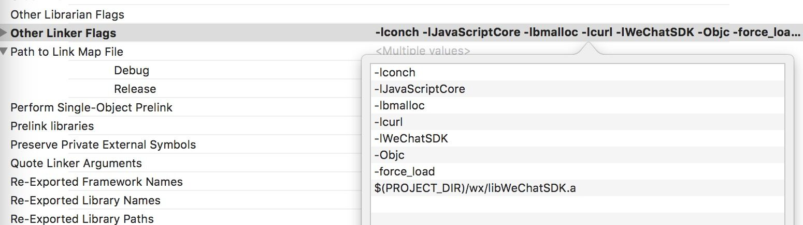
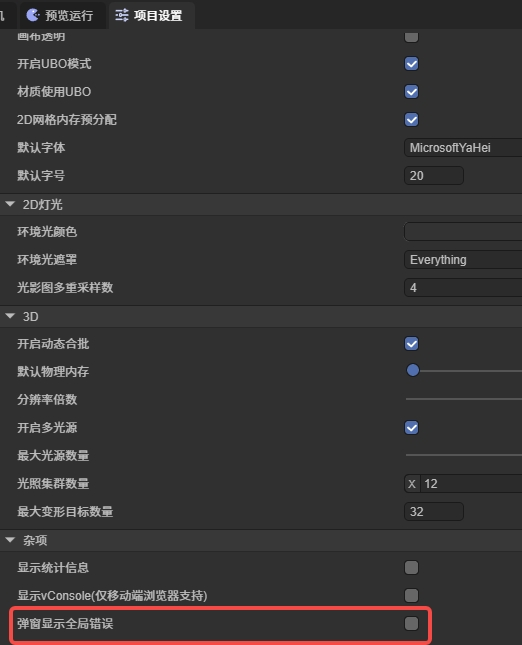

其他说明
1. 关于第三方地图
LayaNative底层渲染使用OpenGL ES渲染，使用android的GLSurfaceView控件和iOS的GLKView控件，所以无法支持第三方地图，如百度地图。
2. 关于文件格式
项目中的文本格式文件（例如:ini、xml、html、json、js等）都必须是utf8编码格式，因为iOS设备不支持非utf8格式编码的文件。
3. 日志级别
LayaNative底层LOG分为五种：
enum class LogType
{
Debug,
Info,
Warn,
Error,
Fatal,
};
每种日志对应的日志级别如下：
enum class LogLevel
{
Debug = 5, // 最详细 - 调试信息
Info = 4, // 一般信息
Warn = 3, // 警告
Error = 2, // 错误
Fatal = 1, // 致命错误
Close = 0, // 关闭所有日志
};
日志级别说明：
- 数值表示"日志详细程度"，数值越大输出越详细
- 设置
g_nLogLevel = n时，输出所有LogLevel值 <= n 的日志 - 默认值为 5（Debug），表示输出所有级别的日志
在js脚本中，开发者可以通过以下函数设置日志级别,默认值为5：
if (window.conch)
{
// 日志级别设置说明：
// 值为0：关闭所有日志输出
// 值为1：只输出 Fatal（致命错误）日志
// 值为2：输出 Fatal + Error（错误）日志
// 值为3：输出 Fatal + Error + Warn（警告）日志
// 值为4：输出 Fatal + Error + Warn + Info（信息）日志
// 值为5：输出所有日志，包括 Debug（调试）日志（默认值）
//
// 过滤规则：值为n时，输出所有 LogLevel <= n 的日志
window.conch.config.setLogLevel(2);
}
Tips 1、conch只能LayaNative环境下调用，在网页版本中是没有conch定义的，所以需要判断一下是否存在。
4.关于iOS对接微信
在iOS平台下对接微信SDK，微信1.77版本以后需要增加-Objc的参数，微信的官方文档中默认让增加-Objc -all_load,但是这样会导致编译报错。
遇到到这种情况可以把参数变成 -Objc -force_load libWeChatSDK.a，配置后，如图1所示：

5. 关于iOS模拟器
LayaNative支持iOS模拟器，但是由于模拟器运行效率比较低，建议开发者使用iOS真机调试。
6. 获取各种信息
| 函数名称 | 函数说明 | 返回值说明 | 备注 |
|---|---|---|---|
| getTotalMem() | 获得运行设备总内存 | 单位为KB | |
| getUsedMem() | 获得当前应用程序占用的内存 | 单位为KB | 返回值不太准确，但是可以作为参考 |
| getAvalidMem() | 获得可用的内存 | 单位为KB | 返回值不太准确，但是可以作为参考 |
| getNetworkType() | 获得网络状态 | 返回int值，NET_NO = 0;NET_WIFI = 1;NET_2G = 2;NET_3G = 3;NET_4G = 4;NET_UNKNOWN=5 | |
| getRuntimeVersion() | 获得Runtime的版本 | 返回值是一个字符串，类似ios-conch5-0.9.2、android-conch5-0.9 | |
| getAppVersion() | 获得iOS-App的版本号 | 返回字符串 1.1 | iOS-app的版本号，通过这个版本号，可以做APP的更新提示。 |
| getAppLocalVersion() | 获得iOS-App的Local版本号 | 返回字符串1.2 | iOS-app的版本号，通过这个版本号，可以做APP的更新提示。 |
这些函数都属于conch.config类的函数，调用实例：
if (window.conch)
{
window.conch.config.getRuntimeVersion();
}
Tips 1、conch只能LayaNative环境下调用，在网页版本中是没有conch定义的，所以需要判断一下是否存在。
7. 屏蔽项目中报错弹框
项目运行过程中有时会弹出一些错误的提示，这些提示都是项目中有代码写错了。我们的建议是解决掉这些错误弹框里边的错，如果实在是解决不掉再去屏蔽。
是否显示报错弹框在IDE项目设置--> 杂项--> 弹窗显示全局错误选项进行设置，如图2所示：

8. 引擎初始化或加载启动脚本过程中的异常处理
在LayaNative版本中，当引擎初始化、加载启动脚本过程中，如果发生异常（如网络不稳定），引擎会自动调用到window.onLayaInitError(error)函数，该函数默认在config.js中定义，代码如下：
window.onLayaInitError = function(e)
{
console.log("onLayaInitError error=" + e);
alert("加载游戏失败，可能由于您的网络不稳定，请退出重进");
}
开发者可以根据自己需求，修改报错信息和报错方式。
9. conch.getWindowInfo
Version >= LayaAir 3.4 类似微信小游戏接口，获取窗口信息，包括屏幕尺寸、窗口尺寸、状态栏高度、安全区域等信息。
返回值
返回一个对象，包含以下属性：
| 属性 | 类型 | 说明 |
|---|---|---|
| pixelRatio | number | 设备像素比 |
| screenWidth | number | 屏幕宽度，单位px |
| screenHeight | number | 屏幕高度，单位px |
| windowWidth | number | 可使用窗口宽度，单位px |
| windowHeight | number | 可使用窗口高度，单位px |
| statusBarHeight | number | 状态栏的高度，单位px(LayaNative中没有小游戏中的状态栏，所以返回0) |
| safeArea | Object | 在竖屏正方向下的安全区域。部分机型没有安全区域概念，也不会返回 safeArea 字段，开发者需自行兼容。 |
| safeArea.left | number | 安全区域左上角横坐标 |
| safeArea.right | number | 安全区域右下角横坐标 |
| safeArea.top | number | 安全区域左上角纵坐标 |
| safeArea.bottom | number | 安全区域右下角纵坐标 |
| safeArea.width | number | 安全区域的宽度，单位逻辑像素 |
| safeArea.height | number | 安全区域的高度，单位逻辑像素 |
| screenTop | number | 窗口上边缘的y值 |
示例代码
if (window.conch)
{
const windowInfo = window.conch.getWindowInfo();
console.log("设备像素比:", windowInfo.pixelRatio);
console.log("屏幕宽度:", windowInfo.screenWidth);
console.log("屏幕高度:", windowInfo.screenHeight);
console.log("窗口宽度:", windowInfo.windowWidth);
console.log("窗口高度:", windowInfo.windowHeight);
console.log("状态栏高度:", windowInfo.statusBarHeight);
console.log("窗口上边缘y值:", windowInfo.screenTop);
if (info.safeArea) {
console.log("安全区域:", JSON.stringify(windowInfo.safeArea));
}
}
10. conch.getDeviceInfo
Version >= LayaAir 3.4
类似微信小游戏接口，获取设备基础信息，包括设备品牌、型号、操作系统等信息。
返回值
返回一个对象，包含以下属性：
| 属性 | 类型 | 说明 |
|---|---|---|
| abi | string | 应用二进制接口类型（仅 Android HarmonyOS 支持） |
| deviceAbi | string | 设备二进制接口类型（仅 Android HarmonyOS 支持） |
| brand | string | 设备品牌 |
| model | string | 设备型号。新机型刚推出一段时间会显示unknown，会尽快进行适配。 |
| system | string | 操作系统及版本 |
| platform | string | 客户端平台，合法值见下表 |
| cpuType | string | 设备CPU型号（仅 Android 支持） |
| memorySize | number | 设备内存大小，单位MB |
platform 合法值：
| 值 | 说明 |
|---|---|
| ios | iOS 平台（包含 iPhone、iPad） |
| android | Android 平台 |
| ohos | HarmonyOS 手机端平台 |
| ohos_pc | HarmonyOS PC平台 |
| windows | Windows 平台 |
示例代码
if (window.conch)
{
const deviceInfo = window.conch.getDeviceInfo();
console.log("应用二进制接口类型:", deviceInfo.abi);
console.log("设备二进制接口类型:", deviceInfo.deviceAbi);
console.log("设备品牌:", deviceInfo.brand);
console.log("设备型号:", deviceInfo.model);
console.log("操作系统:", deviceInfo.system);
console.log("客户端平台:", deviceInfo.platform);
console.log("CPU型号:", deviceInfo.cpuType);
console.log("设备内存:", deviceInfo.memorySize, "MB");
}